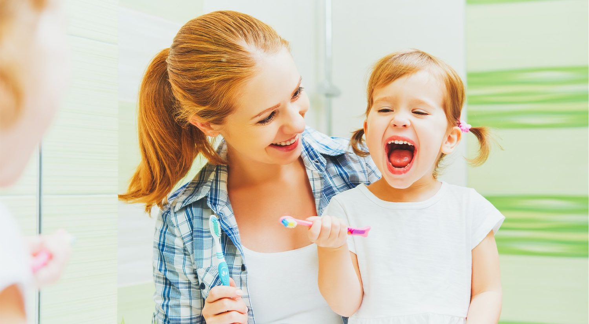

Github Article Header
by How to Get Kids to Brush and Floss Their Teeth
Last Updated - 5 Days Ago

Set a Lifetime of Great Dental Health For The Children
We understand that its important to brush and floss your teeth every day, but its kids to complete this job. Broadly, help will be needed by children younger than age 6 with flossing and cleaning to make sure performed. They may be anticipated to brush and brush night and morning, once kids reach college age.
But how do you get them to do this without nagging?
Oral hygiene is more than simply fresh breath and clean teeth. Good health is a cornerstone of care that is private. As we age, plaque may result in gingivitis, which is characterized by bleeding gums, tooth decay, loss of teeth as well as heart disease. Dental care is at least as essential as becoming to the doctor for for developing kids.
Allowing kids to create thorough customs of flossing and brushing their teeth educates pride, self-respect and obligation. Ages 8-14 tried just to receive my kids to find hygiene. They are taken by me and am pleased to report people haven ' t had some cavities for almost five years.
You aren't alone, When it's a battle on your house to get children to brush and brush your teeth. Keep reading for a few hints to help improve health in your loved ones.
Make Brushing and Flossing Fun for Children
Other specialists and pediatric dentists recommend that kids become used to getting their teeth brushed as early as you can.
By wiping a damp washcloth or a fingertip toothbrush, before baby teeth erupt, you can begin habits|By wiping a damp washcloth or a fingertip toothbrush before baby teeth erupt, you can begin habits|You can begin habits by wiping a damp washcloth or a fingertip toothbrush before baby teeth erupt. Transfer the fingertip or washcloth brush in a circular motion whilst singing a tune that is gentle. From the time cleaning their mouth will probably have begun to become habit.
When children are old enough to brush their teeth their own or with guidance that is adult, make the clinic enjoyable in order to encounter less resistance.
Here are some suggestions that will encourage your kids to enjoy flossing and brushing:
Practice ahead with a classic toothbrush on a stuffed animal or doll
Sing a pleasure"brush your teeth" tune - create silly words and dancing along!
Utilize a tooth brushing timer
Consider chewable pills that turn yellow, Then brush off the shade using a toothbrush
Get a personality themed toothbrush or twist toothbrush
Utilize flavored toothpaste (together with your own dentist 's acceptance )
keep Tabs on brushing and flossing using a celebrity or reward graph
Brush Your Teeth Song to Teach Children
Establish a Reward System If your Children Brush and Floss
A benefit system may be favorably responded to by Kids as young as two for flossing and cleaning. Among the means of keeping tabs on good hygiene habits is using a graph. It will become a constant reminder to allow your children to brush and brush their teeth when submitted in the restroom.
Kids younger than 6 may require aid to brush and brush. Though you might be the one by rewarding your kids take care of their teeth, a responsibility basis can be established for when they're older|By rewarding your kids take care of their teeth, a responsibility basis can be established for when they're older, Though you might be the one finishing the job. My children are in school and middle school, but we maintain a flossing and brushing reward graph for the kids!
Using graph or a benefit system, it's ideal to have your children work toward objectives. Think about offering an outing a sleep-over using a trip to Grandma ', or a buddy s home for a reward for a particular number. For kids who are immune to getting their teeth brushed or scared of, every week they finish with your aid may make a reward like the chance or even a book to remain up 1/2 hour day.
Teenagers and pre-teens have outgrown a reward graph, but you can encourage them to floss and brush with incentives. My children can make around $1 incentive"allowance" for each week they brush, brush, wear their retainer/headgear and rubber bands in their braces without them.
Kids who have a are also rewarded by some dentists. Our dentist has a wall where children can place a bit of paper up. Once the dentist chooses and one name earns a gift certificate of their choice.
Make a Model of Good Oral Care Outcomes
Permit want to do exactly the things they see that their parents or guardians do. By brushing and flossing yourself, twice a year, and visiting the dentist, it may be a model of good oral hygiene habits.
Invite your children to the toilet when you planning to go to bed or are getting ready in the morning. Share your experiences following a trip to your dentist with your loved ones. If you show your kids that you are caring for your teeth, they might be motivated to brush and brush - ideally with nagging!
Speak For Your Pediatric Dentist
It's imperative that you speak with your dentist about concerns related to a child teeth. They might have recommendations to help address conditions like a gag reflex, grooved or crooked teeth. Your physician may recommend a diet to the child, if needed, like ingesting carbohydrate fruits and veggies or avoiding fruit snacks.
Routine dental visits for kids are an essential habit to establish along with brushing and flossing. Years past, kids were not seen by dentists till they had been years old|Till they had been years old dentists failed to see kids|Till they had been years old years past, kids were not seen by dentists for an initial trip|Till they had been years old, years past, kids were not seen by dentists for an initial trip. These days babies are invited to pay a visit with to a dentist within the health care.
Make certain to speak to your physician who will suggest a dentist that is excellent in your town In case you have any questions.
For Kids of Older Kids: Cleaning with Braces
Another Interesting"Brush Your Teeth" Song for Children in the Wiggles
Leave a Comment:
Search
Advertisement